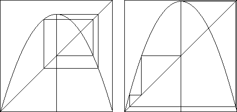

| As s increases from 0 to 4, we observe |
| * Each stable cycle goes through an infinite sequence of period-doublings. |
| | For example, the stable fixed point gives rise to a stable 2-cycle just as the fixed point becomes
unstable. |
|
| | This stable 2-cycle gives rise to a stable 4-cycle just as the 2-cycle becomes unstable. |
|
| | This stable 4-cycle gives rise to a stable 8-cycle just as the 4-cycle becomes unstable. |
|
| In general, any stable n-cycle gives rise to a family |
| 2n-cycle →
4n-cycle → 8n-cycle → 16n-cycle → ... |
| * Each tangent bifurcation produces a stable cycle, that then gives rise to a
cascade of period-doubling bifurcations. |
| * For each s-value, there is at most one stable cycle, and for many there are none. |
| * If there is a stable cycle, the iterates of 1/2 converge to the cycle. This was
proved by Fatou and Julia. (What's special about x = 1/2 is that it is the
critical point, the point at which the logistic map's derivative is 0.) |
| * Call the range of s-values of a stable cycle and all its stable
period-doubling descendants a periodic window. |
| | The order in which these periodic windows arise is a bit complicated, but
completely understood. |
|
|
| | They showed every periodic window
contains an s-value for which x = 1/2 belongs to the cycle. These
cycles are called superstable. |
|
| | With each superstable
cycle, Metropolis, Stein, and Stein associated a sequence of symbols L and R, denoting
whether a point of the cycle falls to the Left or Right of 1/2. |
|
| | The two 4-cycles
shown below have sequences RLR and RLL. (Four-cycles containing
x = 1/2 have only three symbols, because the cycle is always understood to
start with x = 1/2.) |
|
|  |
| | The heart of understanding the ordering of the periodic windows is finding how the symbol sequences
of any two superstable cycles are related to the order of the s-values at which they occur. |
|
| * For some s-values there is no stable cycle at all, and the dynamics are chaotic.
Jakobsen proved the chaotic s-values are a non-negligible portion of the range
3.6 ≤ s ≤ 4, but the amount of chaos is difficult to estimate. |